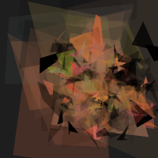
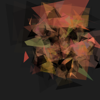
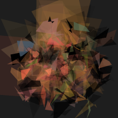

The ghost in the machine has a face

Internet citizen Philip McCarthy created pareidoloop, a "face" generator that was simply a random-image generator hooked up in a loop to a face recognizer program. Things that look more like faces to the computer are kept, and things that look less like faces are discarded. After a long time, something vaguely representing a distorted face appears.

The images are visually very striking, and there's always something a little cosmically creepy about computer-generated art.
I made a few modifications to the original formula - the images are now in color, you can work at larger canvas sizes (although this would be slower), and there's a "simulated annealing" process instead of straight randomness to speed the process up while avoiding local maxima.

The code
Avaiable on GitHub.